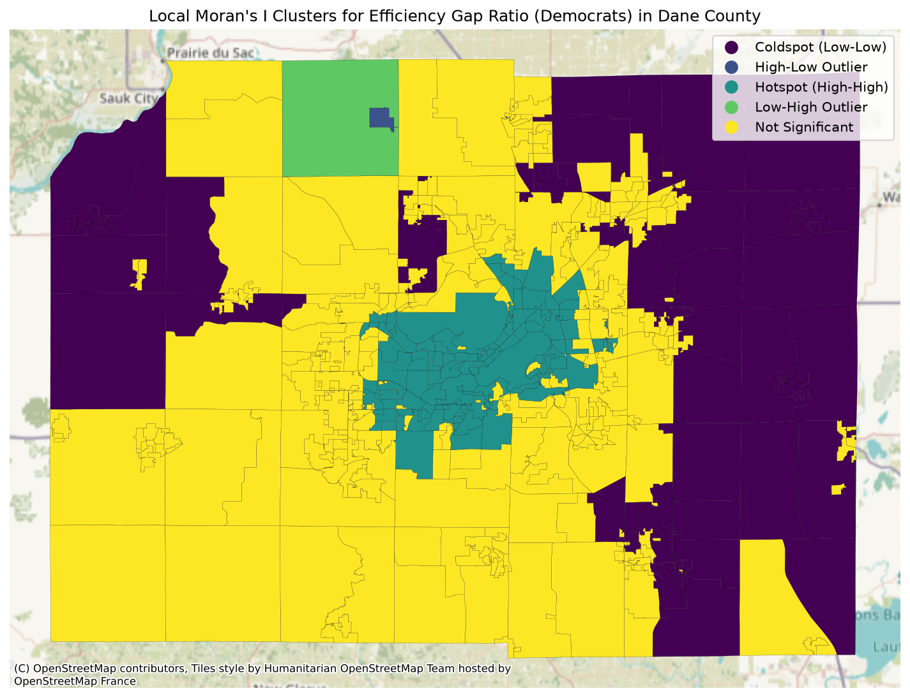
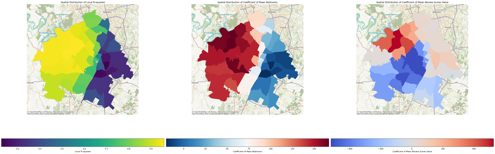

Moran's I · LISA · GWR
Spatial Statistics Toolkit
Global & local spatial autocorrelation and geographically weighted regression on real election and Airbnb data. Moran's I ≈ 0.48 on Dane County wasted-vote ratios; GWR on Austin listing prices reaches R² ≈ 0.89.
View repo →
